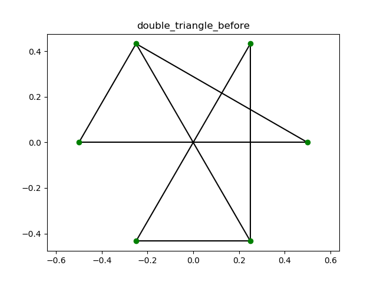
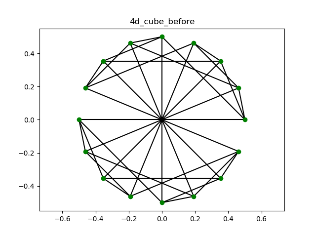

グラフを描画する際の手法としてKK法というものがあります。 グラフの各頂点間に仮想のばねを導入し、その系のエネルギーを最小にさせることにで、グラフのいい描画を得られます。
KK法を実装するためのいくつかの関数群を説明します。
隣接リストを隣接行列に変換します。
次元\(n\)の隣接行列:\(A\)から、warshall floyd法を用いて、距離行列:\(D\)を計算します。実際の処理は以下の通りです。
距離行列:Dの初期値を以下のように設定する\[D=-n*A+(n+1)*J-(n+1)*I\]
\(k\)を\([0,n-1]\)で動かしながら、以下を繰り返す
\(i\)を\([0,n-1]\)で動かしながら、以下を繰り返す
\(j\)を\([0,n-1]\)で動かしながら、以下を繰り返す
\(D\)を出力する
グラフの各頂点の２次元上の配置:posと辺:adj_matrix、グラフ名:nameを受け取ってそのグラフを描画します。
kk2を呼び出すための関数です。
グラフの名前:name、その頂点のリスト:nodeList、グラフの隣接リスト:adj_listを受け取り、グラフに仮想のばねを導入し、そのばね定数と自然長をグラフ描画の適当な初期配置と合わせて、kk2に渡します。
1.convertToMatrix、warshall_floydを使い、nodeList,adj_listから、距離行列:distance_matrixを求める。
2.以下のように\(i,j\)間の、自然長:l_{i,j}、ばね定数:k_{i,j}を定義し、\(Lens=(l_{i,j})\),\(Cons=(k_{i,j})\)とする。 \[l_{i,j}=L0*d_{i,j}/\left(\max_\left(i,j\in[0,n-1]\right)d_{i,j}\right)\] \[k_{i,j}=K/(d_{i,j}^2)\]
3.各頂点の適当な初期配置:Posを与える。ここでは、描画する次元を2ならば、平面上に直径L0の正n角形を与える。すなわち、 \[Pos_i=\left(\begin{matrix}\frac{L_{0}}{2} \cos{\left (\frac{2 \pi}{n} i \right )}\\\frac{L_{0}}{2} \sin{\left (\frac{2 \pi}{n} i \right )}\end{matrix}\right)\] 次元が2でなければ、ランダムな値を与える。
4.kk2(P,L,K,dim=dim,n=n,eps=eps)をよび、最適化させたものをdraw_2Dgraphで描画し、pics/(name).pngに保存する。
グラフ描画の初期配置:Pos、ばね定数:Cons、ばねの自然長:Lensをもらい、エネルギーが最小(初期配置によっては極小)の近似的な配置を返します。
1.動かす点:\(p\)を一つとり、Pos,Cons,Lensから点\(p\)を除いたものを\(P,K,L\)と置く。
2.動かす点\(p\)に対し、そのエネルギー:\(E\),その勾配の絶対値:\(\left|gradE\right|\)、ヤコビアン:\(J\)、ヘシアン\(H\)を以下のよう定義する。 \[E=\sum_{j=0}^{1} \frac{K_{j}}{2} \left(- L_{j} + \sqrt{\sum_{d=0}^{1} \left(- P_{j,d} + p_{d}\right)^{2}}\right)^{2}\] \[\left|gradE\right|=\sqrt{\left(\sum_{j=0}^{1} \frac{K_{j}}{2 \sqrt{\sum_{d=0}^{1} \left(- P_{j,d} + p_{d}\right)^{2}}} \left(- L_{j} + \sqrt{\sum_{d=0}^{1} \left(- P_{j,d} + p_{d}\right)^{2}}\right) \sum_{d=0}^{1} 2 \left(- P_{j,d} + p_{d}\right) \delta_{0 d}\right)^{2} + \left(\sum_{j=0}^{1} \frac{K_{j}}{2 \sqrt{\sum_{d=0}^{1} \left(- P_{j,d} + p_{d}\right)^{2}}} \left(- L_{j} + \sqrt{\sum_{d=0}^{1} \left(- P_{j,d} + p_{d}\right)^{2}}\right) \sum_{d=0}^{1} 2 \left(- P_{j,d} + p_{d}\right) \delta_{1 d}\right)^{2}}\] \[J=\left(\begin{matrix}\sum_{j=0}^{1} \frac{K_{j}}{2 \sqrt{\sum_{d=0}^{1} \left(- P_{j,d} + p_{d}\right)^{2}}} \left(- L_{j} + \sqrt{\sum_{d=0}^{1} \left(- P_{j,d} + p_{d}\right)^{2}}\right) \sum_{d=0}^{1} 2 \left(- P_{j,d} + p_{d}\right) \delta_{0 d} & \sum_{j=0}^{1} \frac{K_{j}}{2 \sqrt{\sum_{d=0}^{1} \left(- P_{j,d} + p_{d}\right)^{2}}} \left(- L_{j} + \sqrt{\sum_{d=0}^{1} \left(- P_{j,d} + p_{d}\right)^{2}}\right) \sum_{d=0}^{1} 2 \left(- P_{j,d} + p_{d}\right) \delta_{1 d}\end{matrix}\right)\] \[H=\left(\begin{matrix}\sum_{j=0}^{1} \left(- \frac{K_{j}}{4 \left(\sum_{d=0}^{1} \left(- P_{j,d} + p_{d}\right)^{2}\right)^{\frac{3}{2}}} \left(- L_{j} + \sqrt{\sum_{d=0}^{1} \left(- P_{j,d} + p_{d}\right)^{2}}\right) \left(\sum_{d=0}^{1} 2 \left(- P_{j,d} + p_{d}\right) \delta_{0 d}\right)^{2} + \frac{K_{j}}{2 \sqrt{\sum_{d=0}^{1} \left(- P_{j,d} + p_{d}\right)^{2}}} \left(- L_{j} + \sqrt{\sum_{d=0}^{1} \left(- P_{j,d} + p_{d}\right)^{2}}\right) \sum_{d=0}^{1} \left(2 \left(- P_{j,d} + p_{d}\right) \frac{d}{d d} \delta_{0 d} \frac{d}{d p_{0}} d + 2 \delta_{0 d}\right) + \frac{K_{j} \left(\sum_{d=0}^{1} 2 \left(- P_{j,d} + p_{d}\right) \delta_{0 d}\right)^{2}}{4 \sum_{d=0}^{1} \left(- P_{j,d} + p_{d}\right)^{2}}\right) & \sum_{j=0}^{1} \left(- \frac{K_{j}}{4 \left(\sum_{d=0}^{1} \left(- P_{j,d} + p_{d}\right)^{2}\right)^{\frac{3}{2}}} \left(- L_{j} + \sqrt{\sum_{d=0}^{1} \left(- P_{j,d} + p_{d}\right)^{2}}\right) \left(\sum_{d=0}^{1} 2 \left(- P_{j,d} + p_{d}\right) \delta_{0 d}\right) \sum_{d=0}^{1} 2 \left(- P_{j,d} + p_{d}\right) \delta_{1 d} + \frac{K_{j}}{2 \sqrt{\sum_{d=0}^{1} \left(- P_{j,d} + p_{d}\right)^{2}}} \left(- L_{j} + \sqrt{\sum_{d=0}^{1} \left(- P_{j,d} + p_{d}\right)^{2}}\right) \sum_{d=0}^{1} \left(2 \left(- P_{j,d} + p_{d}\right) \frac{d}{d d} \delta_{0 d} \frac{d}{d p_{1}} d + 2 \delta_{0 d} \delta_{1 d}\right) + \frac{K_{j}}{4 \sum_{d=0}^{1} \left(- P_{j,d} + p_{d}\right)^{2}} \left(\sum_{d=0}^{1} 2 \left(- P_{j,d} + p_{d}\right) \delta_{0 d}\right) \sum_{d=0}^{1} 2 \left(- P_{j,d} + p_{d}\right) \delta_{1 d}\right)\\\sum_{j=0}^{1} \left(- \frac{K_{j}}{4 \left(\sum_{d=0}^{1} \left(- P_{j,d} + p_{d}\right)^{2}\right)^{\frac{3}{2}}} \left(- L_{j} + \sqrt{\sum_{d=0}^{1} \left(- P_{j,d} + p_{d}\right)^{2}}\right) \left(\sum_{d=0}^{1} 2 \left(- P_{j,d} + p_{d}\right) \delta_{0 d}\right) \sum_{d=0}^{1} 2 \left(- P_{j,d} + p_{d}\right) \delta_{1 d} + \frac{K_{j}}{2 \sqrt{\sum_{d=0}^{1} \left(- P_{j,d} + p_{d}\right)^{2}}} \left(- L_{j} + \sqrt{\sum_{d=0}^{1} \left(- P_{j,d} + p_{d}\right)^{2}}\right) \sum_{d=0}^{1} \left(2 \left(- P_{j,d} + p_{d}\right) \frac{d}{d d} \delta_{0 d} \frac{d}{d p_{1}} d + 2 \delta_{0 d} \delta_{1 d}\right) + \frac{K_{j}}{4 \sum_{d=0}^{1} \left(- P_{j,d} + p_{d}\right)^{2}} \left(\sum_{d=0}^{1} 2 \left(- P_{j,d} + p_{d}\right) \delta_{0 d}\right) \sum_{d=0}^{1} 2 \left(- P_{j,d} + p_{d}\right) \delta_{1 d}\right) & \sum_{j=0}^{1} \left(- \frac{K_{j}}{4 \left(\sum_{d=0}^{1} \left(- P_{j,d} + p_{d}\right)^{2}\right)^{\frac{3}{2}}} \left(- L_{j} + \sqrt{\sum_{d=0}^{1} \left(- P_{j,d} + p_{d}\right)^{2}}\right) \left(\sum_{d=0}^{1} 2 \left(- P_{j,d} + p_{d}\right) \delta_{1 d}\right)^{2} + \frac{K_{j}}{2 \sqrt{\sum_{d=0}^{1} \left(- P_{j,d} + p_{d}\right)^{2}}} \left(- L_{j} + \sqrt{\sum_{d=0}^{1} \left(- P_{j,d} + p_{d}\right)^{2}}\right) \sum_{d=0}^{1} \left(2 \left(- P_{j,d} + p_{d}\right) \frac{d}{d d} \delta_{1 d} \frac{d}{d p_{1}} d + 2 \delta_{1 d}\right) + \frac{K_{j} \left(\sum_{d=0}^{1} 2 \left(- P_{j,d} + p_{d}\right) \delta_{1 d}\right)^{2}}{4 \sum_{d=0}^{1} \left(- P_{j,d} + p_{d}\right)^{2}}\right)\end{matrix}\right)\]
3.動かす点:\(p\)を変えながら、\(\left|gradE\right|\)が最大となる点探す。
4.\(p\)を以下の手順で最適化する。
1.$x$を変数として以下の連立方程式を解く。\[H x=J\]
2.その解を用いて、点$p$を更新する。\[p=p-x\]
5.動かす点:\(p\)を変えながら、\(\left|gradE\right|\)が最大となる点探し、\(\left|gradE\right|>eps\)ならば4に戻る。
実際にいくつかのグラフで試してみましょう。
まず、kkを呼びます。
距離行列:distance_matrixは以下のよう求まります。 \[distance\_matrix=[[ 0. 1. 1.] [ 1. 0. 1.] [ 1. 1. 0.]]\] kk2に以下の変数を渡します。 \[Lens=\left(\begin{matrix}0.0 & 1.0 & 1.0\\1.0 & 0.0 & 1.0\\1.0 & 1.0 & 0.0\end{matrix}\right)\] \[Cons=\left(\begin{matrix}0.0 & 1.0 & 1.0\\1.0 & 0.0 & 1.0\\1.0 & 1.0 & 0.0\end{matrix}\right)\] \[Pos=\left(\begin{matrix}0.5 & 0.0\\-0.25 & 0.433012701892219\\-0.25 & -0.433012701892219\end{matrix}\right)\] kk2を呼び、最適化後、triangleのグラフを描画します
ループを\(5\)回まわし、最適化した結果、以下が得られました。 \[Pos=\left(\begin{matrix}0.663075360582657 & 5.02184560209831 \cdot 10^{-5}\\-0.242501267883518 & 0.424232930166604\\-0.157065957089908 & -0.572110789519442\end{matrix}\right)\]
グラフ:triangleは以下のように描画されました。
まず、kkを呼びます。
距離行列:distance_matrixは以下のよう求まります。 \[distance\_matrix=[[ 0. 3. 1. 1. 3. 2.] [ 3. 0. 2. 3. 1. 1.] [ 1. 2. 0. 1. 2. 1.] [ 1. 3. 1. 0. 3. 2.] [ 3. 1. 2. 3. 0. 1.] [ 2. 1. 1. 2. 1. 0.]]\] kk2に以下の変数を渡します。 \[Lens=\left(\begin{matrix}0.0 & 1.0 & 0.333333333333333 & 0.333333333333333 & 1.0 & 0.666666666666667\\1.0 & 0.0 & 0.666666666666667 & 1.0 & 0.333333333333333 & 0.333333333333333\\0.333333333333333 & 0.666666666666667 & 0.0 & 0.333333333333333 & 0.666666666666667 & 0.333333333333333\\0.333333333333333 & 1.0 & 0.333333333333333 & 0.0 & 1.0 & 0.666666666666667\\1.0 & 0.333333333333333 & 0.666666666666667 & 1.0 & 0.0 & 0.333333333333333\\0.666666666666667 & 0.333333333333333 & 0.333333333333333 & 0.666666666666667 & 0.333333333333333 & 0.0\end{matrix}\right)\] \[Cons=\left(\begin{matrix}0.0 & 0.111111111111111 & 1.0 & 1.0 & 0.111111111111111 & 0.25\\0.111111111111111 & 0.0 & 0.25 & 0.111111111111111 & 1.0 & 1.0\\1.0 & 0.25 & 0.0 & 1.0 & 0.25 & 1.0\\1.0 & 0.111111111111111 & 1.0 & 0.0 & 0.111111111111111 & 0.25\\0.111111111111111 & 1.0 & 0.25 & 0.111111111111111 & 0.0 & 1.0\\0.25 & 1.0 & 1.0 & 0.25 & 1.0 & 0.0\end{matrix}\right)\] \[Pos=\left(\begin{matrix}0.5 & 0.0\\0.25 & 0.433012701892219\\-0.25 & 0.433012701892219\\-0.5 & 6.12323399573676 \cdot 10^{-17}\\-0.25 & -0.433012701892219\\0.25 & -0.433012701892219\end{matrix}\right)\] kk2を呼び、最適化後、double_triangleのグラフを描画します
ループを\(200\)回まわし、最適化した結果、以下が得られました。 \[Pos=\left(\begin{matrix}-0.0131198906892982 & -0.392731563572292\\0.315531084998682 & 0.491565258140115\\0.24534983088774 & -0.170578494742702\\0.296007440051505 & -0.507614808678552\\0.624655314180454 & 0.376673998848431\\0.366177830443609 & 0.154528726142147\end{matrix}\right)\]
グラフ:double_triangleは以下のように描画されました。
 
まず、kkを呼びます。
距離行列:distance_matrixは以下のよう求まります。 \[distance\_matrix=[[ 0. 1. 1. 2. 1. 2. 2. 3. 1. 2. 2. 3. 2. 3. 3. 4.] [ 1. 0. 2. 1. 2. 1. 3. 2. 2. 1. 3. 2. 3. 2. 4. 3.] [ 1. 2. 0. 1. 2. 3. 1. 2. 2. 3. 1. 2. 3. 4. 2. 3.] [ 2. 1. 1. 0. 3. 2. 2. 1. 3. 2. 2. 1. 4. 3. 3. 2.] [ 1. 2. 2. 3. 0. 1. 1. 2. 2. 3. 3. 4. 1. 2. 2. 3.] [ 2. 1. 3. 2. 1. 0. 2. 1. 3. 2. 4. 3. 2. 1. 3. 2.] [ 2. 3. 1. 2. 1. 2. 0. 1. 3. 4. 2. 3. 2. 3. 1. 2.] [ 3. 2. 2. 1. 2. 1. 1. 0. 4. 3. 3. 2. 3. 2. 2. 1.] [ 1. 2. 2. 3. 2. 3. 3. 4. 0. 1. 1. 2. 1. 2. 2. 3.] [ 2. 1. 3. 2. 3. 2. 4. 3. 1. 0. 2. 1. 2. 1. 3. 2.] [ 2. 3. 1. 2. 3. 4. 2. 3. 1. 2. 0. 1. 2. 3. 1. 2.] [ 3. 2. 2. 1. 4. 3. 3. 2. 2. 1. 1. 0. 3. 2. 2. 1.] [ 2. 3. 3. 4. 1. 2. 2. 3. 1. 2. 2. 3. 0. 1. 1. 2.] [ 3. 2. 4. 3. 2. 1. 3. 2. 2. 1. 3. 2. 1. 0. 2. 1.] [ 3. 4. 2. 3. 2. 3. 1. 2. 2. 3. 1. 2. 1. 2. 0. 1.] [ 4. 3. 3. 2. 3. 2. 2. 1. 3. 2. 2. 1. 2. 1. 1. 0.]]\] kk2に以下の変数を渡します。 \[Lens=\left(\begin{array}{cccccccccccccccc}0.0 & 0.25 & 0.25 & 0.5 & 0.25 & 0.5 & 0.5 & 0.75 & 0.25 & 0.5 & 0.5 & 0.75 & 0.5 & 0.75 & 0.75 & 1.0\\0.25 & 0.0 & 0.5 & 0.25 & 0.5 & 0.25 & 0.75 & 0.5 & 0.5 & 0.25 & 0.75 & 0.5 & 0.75 & 0.5 & 1.0 & 0.75\\0.25 & 0.5 & 0.0 & 0.25 & 0.5 & 0.75 & 0.25 & 0.5 & 0.5 & 0.75 & 0.25 & 0.5 & 0.75 & 1.0 & 0.5 & 0.75\\0.5 & 0.25 & 0.25 & 0.0 & 0.75 & 0.5 & 0.5 & 0.25 & 0.75 & 0.5 & 0.5 & 0.25 & 1.0 & 0.75 & 0.75 & 0.5\\0.25 & 0.5 & 0.5 & 0.75 & 0.0 & 0.25 & 0.25 & 0.5 & 0.5 & 0.75 & 0.75 & 1.0 & 0.25 & 0.5 & 0.5 & 0.75\\0.5 & 0.25 & 0.75 & 0.5 & 0.25 & 0.0 & 0.5 & 0.25 & 0.75 & 0.5 & 1.0 & 0.75 & 0.5 & 0.25 & 0.75 & 0.5\\0.5 & 0.75 & 0.25 & 0.5 & 0.25 & 0.5 & 0.0 & 0.25 & 0.75 & 1.0 & 0.5 & 0.75 & 0.5 & 0.75 & 0.25 & 0.5\\0.75 & 0.5 & 0.5 & 0.25 & 0.5 & 0.25 & 0.25 & 0.0 & 1.0 & 0.75 & 0.75 & 0.5 & 0.75 & 0.5 & 0.5 & 0.25\\0.25 & 0.5 & 0.5 & 0.75 & 0.5 & 0.75 & 0.75 & 1.0 & 0.0 & 0.25 & 0.25 & 0.5 & 0.25 & 0.5 & 0.5 & 0.75\\0.5 & 0.25 & 0.75 & 0.5 & 0.75 & 0.5 & 1.0 & 0.75 & 0.25 & 0.0 & 0.5 & 0.25 & 0.5 & 0.25 & 0.75 & 0.5\\0.5 & 0.75 & 0.25 & 0.5 & 0.75 & 1.0 & 0.5 & 0.75 & 0.25 & 0.5 & 0.0 & 0.25 & 0.5 & 0.75 & 0.25 & 0.5\\0.75 & 0.5 & 0.5 & 0.25 & 1.0 & 0.75 & 0.75 & 0.5 & 0.5 & 0.25 & 0.25 & 0.0 & 0.75 & 0.5 & 0.5 & 0.25\\0.5 & 0.75 & 0.75 & 1.0 & 0.25 & 0.5 & 0.5 & 0.75 & 0.25 & 0.5 & 0.5 & 0.75 & 0.0 & 0.25 & 0.25 & 0.5\\0.75 & 0.5 & 1.0 & 0.75 & 0.5 & 0.25 & 0.75 & 0.5 & 0.5 & 0.25 & 0.75 & 0.5 & 0.25 & 0.0 & 0.5 & 0.25\\0.75 & 1.0 & 0.5 & 0.75 & 0.5 & 0.75 & 0.25 & 0.5 & 0.5 & 0.75 & 0.25 & 0.5 & 0.25 & 0.5 & 0.0 & 0.25\\1.0 & 0.75 & 0.75 & 0.5 & 0.75 & 0.5 & 0.5 & 0.25 & 0.75 & 0.5 & 0.5 & 0.25 & 0.5 & 0.25 & 0.25 & 0.0\end{array}\right)\] \[Cons=\left(\begin{array}{cccccccccccccccc}0.0 & 1.0 & 1.0 & 0.25 & 1.0 & 0.25 & 0.25 & 0.111111111111111 & 1.0 & 0.25 & 0.25 & 0.111111111111111 & 0.25 & 0.111111111111111 & 0.111111111111111 & 0.0625\\1.0 & 0.0 & 0.25 & 1.0 & 0.25 & 1.0 & 0.111111111111111 & 0.25 & 0.25 & 1.0 & 0.111111111111111 & 0.25 & 0.111111111111111 & 0.25 & 0.0625 & 0.111111111111111\\1.0 & 0.25 & 0.0 & 1.0 & 0.25 & 0.111111111111111 & 1.0 & 0.25 & 0.25 & 0.111111111111111 & 1.0 & 0.25 & 0.111111111111111 & 0.0625 & 0.25 & 0.111111111111111\\0.25 & 1.0 & 1.0 & 0.0 & 0.111111111111111 & 0.25 & 0.25 & 1.0 & 0.111111111111111 & 0.25 & 0.25 & 1.0 & 0.0625 & 0.111111111111111 & 0.111111111111111 & 0.25\\1.0 & 0.25 & 0.25 & 0.111111111111111 & 0.0 & 1.0 & 1.0 & 0.25 & 0.25 & 0.111111111111111 & 0.111111111111111 & 0.0625 & 1.0 & 0.25 & 0.25 & 0.111111111111111\\0.25 & 1.0 & 0.111111111111111 & 0.25 & 1.0 & 0.0 & 0.25 & 1.0 & 0.111111111111111 & 0.25 & 0.0625 & 0.111111111111111 & 0.25 & 1.0 & 0.111111111111111 & 0.25\\0.25 & 0.111111111111111 & 1.0 & 0.25 & 1.0 & 0.25 & 0.0 & 1.0 & 0.111111111111111 & 0.0625 & 0.25 & 0.111111111111111 & 0.25 & 0.111111111111111 & 1.0 & 0.25\\0.111111111111111 & 0.25 & 0.25 & 1.0 & 0.25 & 1.0 & 1.0 & 0.0 & 0.0625 & 0.111111111111111 & 0.111111111111111 & 0.25 & 0.111111111111111 & 0.25 & 0.25 & 1.0\\1.0 & 0.25 & 0.25 & 0.111111111111111 & 0.25 & 0.111111111111111 & 0.111111111111111 & 0.0625 & 0.0 & 1.0 & 1.0 & 0.25 & 1.0 & 0.25 & 0.25 & 0.111111111111111\\0.25 & 1.0 & 0.111111111111111 & 0.25 & 0.111111111111111 & 0.25 & 0.0625 & 0.111111111111111 & 1.0 & 0.0 & 0.25 & 1.0 & 0.25 & 1.0 & 0.111111111111111 & 0.25\\0.25 & 0.111111111111111 & 1.0 & 0.25 & 0.111111111111111 & 0.0625 & 0.25 & 0.111111111111111 & 1.0 & 0.25 & 0.0 & 1.0 & 0.25 & 0.111111111111111 & 1.0 & 0.25\\0.111111111111111 & 0.25 & 0.25 & 1.0 & 0.0625 & 0.111111111111111 & 0.111111111111111 & 0.25 & 0.25 & 1.0 & 1.0 & 0.0 & 0.111111111111111 & 0.25 & 0.25 & 1.0\\0.25 & 0.111111111111111 & 0.111111111111111 & 0.0625 & 1.0 & 0.25 & 0.25 & 0.111111111111111 & 1.0 & 0.25 & 0.25 & 0.111111111111111 & 0.0 & 1.0 & 1.0 & 0.25\\0.111111111111111 & 0.25 & 0.0625 & 0.111111111111111 & 0.25 & 1.0 & 0.111111111111111 & 0.25 & 0.25 & 1.0 & 0.111111111111111 & 0.25 & 1.0 & 0.0 & 0.25 & 1.0\\0.111111111111111 & 0.0625 & 0.25 & 0.111111111111111 & 0.25 & 0.111111111111111 & 1.0 & 0.25 & 0.25 & 0.111111111111111 & 1.0 & 0.25 & 1.0 & 0.25 & 0.0 & 1.0\\0.0625 & 0.111111111111111 & 0.111111111111111 & 0.25 & 0.111111111111111 & 0.25 & 0.25 & 1.0 & 0.111111111111111 & 0.25 & 0.25 & 1.0 & 0.25 & 1.0 & 1.0 & 0.0\end{array}\right)\] \[Pos=\left(\begin{matrix}0.5 & 0.0\\0.461939766255643 & 0.191341716182545\\0.353553390593274 & 0.353553390593274\\0.191341716182545 & 0.461939766255643\\3.06161699786838 \cdot 10^{-17} & 0.5\\-0.191341716182545 & 0.461939766255643\\-0.353553390593274 & 0.353553390593274\\-0.461939766255643 & 0.191341716182545\\-0.5 & 6.12323399573676 \cdot 10^{-17}\\-0.461939766255643 & -0.191341716182545\\-0.353553390593274 & -0.353553390593274\\-0.191341716182545 & -0.461939766255643\\-9.18485099360515 \cdot 10^{-17} & -0.5\\0.191341716182545 & -0.461939766255643\\0.353553390593274 & -0.353553390593274\\0.461939766255643 & -0.191341716182545\end{matrix}\right)\] kk2を呼び、最適化後、4d_cubeのグラフを描画します
ループを\(856\)回まわし、最適化した結果、以下が得られました。 \[Pos=\left(\begin{matrix}-0.371131023428732 & 0.217735808381543\\-0.100147048172716 & 0.352646226741972\\-0.256428469386695 & -0.0546491994909462\\0.0480645010863682 & 0.0969453904442692\\-0.0855225346772024 & 0.141722202534727\\0.186862504257619 & 0.256424697134059\\0.066071785558317 & -0.162770570257709\\0.321773079820407 & -0.0145592860822472\\-0.467352554239919 & -0.0692737300324963\\-0.211651466716934 & 0.0789378154060027\\-0.332442222979741 & -0.34025775273154\\-0.0600569988152985 & -0.225555302209335\\-0.193643898710097 & -0.180778128938429\\0.110849205112599 & -0.0291837022487001\\-0.0454325231906799 & -0.436479114613588\\0.225551358839513 & -0.301568786056774\end{matrix}\right)\]
グラフ:4d_cubeは以下のように描画されました。
